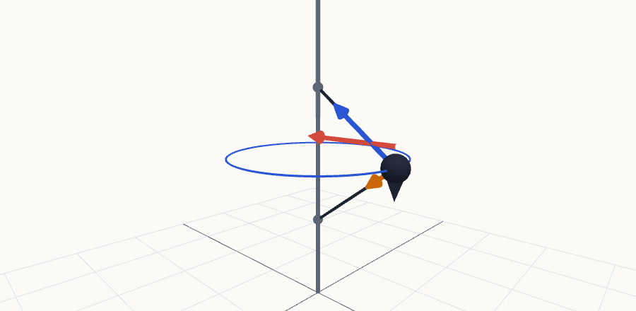

Ejercicios resueltos del módulo 1
Problemas completos, paso a paso, con el porqué de cada fórmula. 1) Un paquete atado con dos cuerdas a una varilla que gira (dinámica del movimiento circular, temas 4 y 5). 2) Un bloque que baja por un plano inclinado rugoso y sale volando de una mesa (Newton con fricción + proyectil, temas 2-5).
1Paquete con dos cuerdas en una varilla que gira P
Un pequeño paquete de masa $m=2{,}00$ kg está atado a dos cuerdas idénticas de longitud $L=1{,}50$ m cada una. Las cuerdas están unidas a una varilla vertical en dos puntos, separados por una distancia vertical $d=1{,}80$ m. El paquete se encuentra entre los dos puntos de unión de las cuerdas, formando una especie de triángulo cuando el sistema gira. Cuando el sistema gira alrededor de la varilla vertical a una velocidad angular constante, las cuerdas se estiran. La tensión en la cuerda superior es $T_1=60{,}0$ N. Se asume que $g=9{,}80\ \text{m/s}^2$.
a) ¿Cuál es la tensión $T_2$ en la cuerda inferior? b) ¿Cuántas revoluciones por minuto (rpm) realiza el sistema?
PAntes de empezar
Prerrequisitos: descomponer una fuerza en componentes con seno y coseno (tema 1), la segunda ley de Newton $\sum\vec F=m\vec a$ (tema 4) y que un cuerpo en movimiento circular uniforme tiene aceleración dirigida al centro (tema 3, §3.4).
Imagina una bola atada a la varilla con dos cuerdas, una que sale hacia arriba y otra hacia abajo. Al girar, la bola «se va hacia fuera» y estira las dos. Las dos cuerdas tiran hacia la varilla, y eso es justo lo que hace falta para que la bola describa un círculo. Pero en vertical la cosa no es simétrica: la cuerda de arriba tira hacia arriba y la de abajo tira hacia abajo (porque su extremo está más bajo que la bola). La de arriba tiene que sostener el peso y además compensar el tirón de la de abajo, por eso $T_1>T_2$.
PLas fórmulas que vamos a usar (y por qué)
$$\sum F_x=m\,a_x,\qquad \sum F_y=m\,a_y$$
Es la ley que conecta las fuerzas con el movimiento. Se escribe una ecuación por cada eje. Si en un eje no hay aceleración, la suma de fuerzas en ese eje es cero (aquí: en vertical el paquete ni sube ni baja).
U p.150$$a_{rad}=\frac{v^2}{r}=\omega^2 r,\qquad v=\omega r$$
$r$ es el radio de la circunferencia que describe el paquete (su distancia a la varilla, no la longitud de la cuerda). La aceleración apunta hacia el centro, es decir, hacia la varilla. Sirve para pasar de «cuánto vale la fuerza horizontal neta» a «cuánto gira». $\omega$ es la velocidad angular en rad/s.
U p.83-84, 150$$\text{rpm}=\omega\cdot\frac{60}{2\pi}\qquad(1\ \text{rev}=2\pi\ \text{rad},\ 1\ \text{min}=60\ \text{s})$$
Una vuelta completa son $2\pi$ rad, y un minuto son 60 s. Así que multiplicas rad/s por $60/2\pi\approx9{,}55$.
U p.275Solución paso a paso
Ejercicio 1 — Paquete con dos cuerdas P
- Dibuja y saca la geometría. El paquete está justo a mitad de altura entre los dos puntos de unión (por simetría, las cuerdas son iguales). Cada cuerda forma con la vertical un ángulo $\varphi$ tal que el cateto vertical es $d/2$ y la hipotenusa $L$: $$\cos\varphi=\frac{d/2}{L}=\frac{0{,}90}{1{,}50}=0{,}60\ \Rightarrow\ \sin\varphi=0{,}80\ (\varphi=53{,}13^\circ).$$ El radio de la circunferencia es el otro cateto: $r=L\sin\varphi=1{,}50\cdot0{,}80=1{,}20$ m (comprobación con Pitágoras: $\sqrt{1{,}5^2-0{,}9^2}=1{,}2$ ✓).
- Diagrama de cuerpo libre del paquete. Solo actúan fuerzas de otros cuerpos sobre él: el peso $mg$ (Tierra), la tensión $T_1$ de la cuerda superior (tira hacia el punto A: hacia arriba y hacia la varilla) y la tensión $T_2$ de la cuerda inferior (tira hacia el punto B: hacia abajo y hacia la varilla). No existe ninguna «fuerza centrífuga»: lo que hace girar al paquete es la parte horizontal de las tensiones.
- Ejes. $y$ vertical hacia arriba; $x$ horizontal hacia la varilla (hacia el centro del círculo). Con esta elección la aceleración es $a_y=0$ (el paquete se mueve siempre a la misma altura) y $a_x=a_{rad}=\omega^2r$.
- Descompón las tensiones (cada una forma $\varphi$ con la vertical, así que su componente vertical lleva $\cos\varphi$ y la horizontal $\sin\varphi$):
- $T_1$: vertical $+T_1\cos\varphi$ (arriba), horizontal $+T_1\sin\varphi$ (hacia la varilla).
- $T_2$: vertical $-T_2\cos\varphi$ (abajo), horizontal $+T_2\sin\varphi$ (hacia la varilla).
- Peso: vertical $-mg$.
- Segunda ley en cada eje. $$\text{(1) vertical, } a_y=0:\quad T_1\cos\varphi-T_2\cos\varphi-mg=0$$ $$\text{(2) horizontal, } a_x=\omega^2r:\quad T_1\sin\varphi+T_2\sin\varphi=m\,\omega^2 r$$ Dos ecuaciones, dos incógnitas ($T_2$ y $\omega$): la (1) no contiene $\omega$ y la (2) sí, así que se resuelven una detrás de otra.
- (a) Tensión inferior. Despejamos $T_2$ de (1): $T_2=T_1-\dfrac{mg}{\cos\varphi}$. $$T_2=60{,}0-\frac{2{,}00\cdot9{,}80}{0{,}60}=60{,}0-32{,}67=\mathbf{27{,}3\ N}.$$ Es positiva, así que la cuerda inferior está realmente tensa (una cuerda no puede empujar). Además $T_2\lt T_1$, como predecía la intuición.
- (b) Revoluciones por minuto. De (2): $\omega^2=\dfrac{(T_1+T_2)\sin\varphi}{m\,r}=\dfrac{(60{,}0+27{,}33)(0{,}80)}{2{,}00\cdot1{,}20}=29{,}11\ \text{s}^{-2}$, luego $$\omega=\sqrt{29{,}11}=5{,}395\ \text{rad/s}\ \Rightarrow\ \text{rpm}=5{,}395\cdot\frac{60}{2\pi}=\mathbf{51{,}5\ rpm}.$$ Atajo: como $r=L\sin\varphi$, el $\sin\varphi$ se cancela y (2) queda $T_1+T_2=m\omega^2L$; con eso, $\omega^2=87{,}33/(2{,}00\cdot1{,}50)$, el mismo valor.
- Comprueba. Unidades: N/(kg·m)=s$^{-2}$ ✓. Orden de magnitud: 51,5 rpm ≈ 0,86 vueltas por segundo, razonable. Aceleración $a_{rad}=\omega^2r=34{,}9\ \text{m/s}^2\approx3{,}6\,g$ y rapidez $v=\omega r=6{,}47$ m/s; fuerza horizontal neta $=ma_{rad}=69{,}9$ N $=(60+27{,}33)(0{,}8)$ ✓.
Resultado: a) $T_2=27{,}3$ N; b) $\omega=5{,}40$ rad/s $=51{,}5$ rpm.

¿Y si cambia la velocidad? Un análisis que cae en examen
Sumando y restando las ecuaciones (1) y (2) (con $r=L\sin\varphi$): $$T_1+T_2=m\omega^2L,\qquad T_1-T_2=\frac{mg}{\cos\varphi}.$$ Por tanto $T_1=\tfrac12\left(m\omega^2L+\dfrac{mg}{\cos\varphi}\right)$ y $T_2=\tfrac12\left(m\omega^2L-\dfrac{mg}{\cos\varphi}\right)$. La cuerda inferior solo está tensa si $T_2\ge0$: $$\omega\ge\sqrt{\frac{g}{L\cos\varphi}}=\sqrt{\frac{g}{d/2}}=3{,}30\ \text{rad/s}=31{,}5\ \text{rpm}.$$ Con menos giro, el paquete cae y la cuerda inferior queda floja (el «triángulo» desaparece). Con $\omega$ del problema se recupera $T_1=60$ N ✓.
P2Bloque en un plano inclinado rugoso que sale volando de una mesa P
Un bloque de masa $m=2{,}00$ kg se libera desde el reposo en la parte superior de un plano inclinado rugoso. La parte superior del plano está a una altura vertical $h=0{,}500$ m por encima de la mesa, y el plano forma un ángulo $\theta=30{,}0^\circ$ con la horizontal. El coeficiente de fricción cinética entre el bloque y el plano es $\mu_k=0{,}200$. El plano termina exactamente en el borde de la mesa, que tiene una altura $H=2{,}00$ m sobre el suelo. Al llegar al extremo inferior del plano, el bloque sigue por el aire como un proyectil (sin resistencia del aire) hasta chocar con el suelo. Toma $g=9{,}80\ \text{m/s}^2$.
1) Dibuja el diagrama de cuerpo libre del bloque mientras desciende y calcula su aceleración. 2) Rapidez $v$ con la que abandona el plano en el borde de la mesa. 3) Distancia horizontal $R$, medida desde la base de la mesa, a la que choca con el suelo. 4) Tiempo total desde que se suelta hasta que golpea el suelo.
PCómo plantearlo antes de empezar
Prerrequisitos: componentes de un vector con seno y coseno (tema 1), movimiento con aceleración constante (tema 2), movimiento de proyectiles (tema 3) y segunda ley de Newton con fricción (temas 4 y 5).
El problema son dos problemas pequeños pegados, y lo que los une es la velocidad en el borde de la mesa:
- Fase 1 — el plano (dinámica): el bloque va en línea recta con aceleración constante, porque las fuerzas no cambian mientras desliza. Hay fuerzas, así que hay que usar Newton para hallar $a$. Después, cinemática de aceleración constante para obtener $v$ y el tiempo.
- Fase 2 — el vuelo (cinemática pura): en el aire solo actúa la gravedad. El bloque sale con la velocidad de la fase 1, que apunta a lo largo del plano, o sea 30° por debajo de la horizontal (no horizontal). Se descompone en $v_x$ (constante) y $v_{0y}$ (hacia abajo) y se resuelve como un proyectil.
Orden de ataque: 1) DCL y $a$ → 2) $v$ en el borde → 3) y 4) el vuelo. Cada apartado usa el resultado del anterior; el tiempo total del apartado 4 es la suma de los tiempos de las dos fases.
PLas fórmulas del temario que vamos a usar (y por qué)
$$\sum F_x=m\,a_x,\qquad \sum F_y=m\,a_y$$
Aquí conviene girar los ejes: $x$ a lo largo del plano (sentido del movimiento, plano abajo) e $y$ perpendicular al plano. Así la aceleración solo tiene componente $x$ y $a_y=0$ (el bloque no se hunde ni despega del plano). El peso, que es lo único que no está alineado con los ejes, se descompone: $mg\sin\theta$ a lo largo del plano y $mg\cos\theta$ perpendicular a él.
U p.147$$f_k=\mu_k\,n$$
$n$ es la fuerza normal (la que ejerce el plano perpendicularmente), no el peso. Como en el eje $y$ no hay aceleración, $n=mg\cos\theta$. La fricción cinética apunta contra el movimiento (plano arriba).
U p.143-147$$v=v_0+a\,t,\qquad v^2=v_0^2+2a\,(x-x_0)$$
Valen porque $a$ es constante a lo largo del plano. La segunda no contiene el tiempo: útil cuando conoces la distancia recorrida y no el tiempo (fase 1, rapidez). La primera da el tiempo una vez conocida la rapidez.
U p.45-47$$x=v_{0x}\,t,\qquad y=v_{0y}\,t+\tfrac12 g\,t^2\ \ (y\ \text{positivo hacia abajo})$$$$v_{0x}=v\cos\theta,\qquad v_{0y}=v\sin\theta$$
Los dos ejes son independientes: en horizontal no hay fuerza (velocidad constante) y en vertical hay caída libre. El único «puente» entre ambos es el tiempo $t$. Elegimos $y$ positivo hacia abajo porque el bloque sale ya bajando; así $g$ suma con $v_{0y}$ y evitamos errores de signo.
U p.76El trabajo de la fricción es $-f_k\,s$ y el del peso es $mgh$, de modo que $\tfrac12mv^2=mgh-f_k\,s$. Se usa solo como comprobación (tema 7).
U p.214Solución paso a paso
Ejercicio 2 — Plano inclinado rugoso y tiro desde la mesa P
Apartado 1 · DCL y aceleración
- Dibuja el cuerpo y las fuerzas reales. Sobre el bloque actúan solo tres fuerzas de otros cuerpos: el peso $mg$ (Tierra, vertical hacia abajo), la normal $n$ (plano, perpendicular a su superficie, hacia fuera) y la fricción cinética $f_k$ (plano, paralela a su superficie y hacia arriba, contra el deslizamiento). No hay «fuerza del movimiento» hacia abajo del plano: lo que empuja plano abajo es la componente del peso.
- Ejes girados y componentes del peso. $x$ plano abajo, $y$ perpendicular al plano. El peso forma un ángulo $\theta$ con la perpendicular al plano, por lo que: $\ w_x=mg\sin\theta,\ \ w_y=-mg\cos\theta$.
- Eje $y$ (sin aceleración). $\sum F_y=n-mg\cos\theta=0\ \Rightarrow\ n=mg\cos\theta=2{,}00\cdot9{,}80\cdot0{,}866=17{,}0$ N.
- Fricción. $f_k=\mu_k n=0{,}200\cdot17{,}0=3{,}39$ N.
- Eje $x$ (con aceleración $a$). $\sum F_x=mg\sin\theta-f_k=m\,a$, con $mg\sin\theta=2{,}00\cdot9{,}80\cdot0{,}500=9{,}80$ N. Despejando y simplificando $m$: $$a=g\,(\sin\theta-\mu_k\cos\theta)=9{,}80\,(0{,}500-0{,}200\cdot0{,}866)=\mathbf{3{,}20\ m/s^2}$$ (plano abajo). Observa que la masa se cancela: $a$ no depende de $m$. Es positiva, así que el bloque efectivamente desliza hacia abajo (si saliera negativa significaría que la fricción gana y no se mueve).
Apartado 2 · Rapidez en el borde de la mesa
- Longitud recorrida sobre el plano. La altura vertical es $h$ y el recorrido sigue la hipotenusa: $\sin\theta=h/s\ \Rightarrow\ s=\dfrac{h}{\sin\theta}=\dfrac{0{,}500}{0{,}500}=1{,}00$ m. Error típico: usar $s=h$.
- Cinemática de aceleración constante (parte del reposo, $v_0=0$): $v^2=2a\,s=2\cdot3{,}2026\cdot1{,}00=6{,}405\ \text{m}^2/\text{s}^2$, luego $$v=\mathbf{2{,}53\ m/s}\quad(\text{dirigida a lo largo del plano, }30^\circ\text{ por debajo de la horizontal}).$$
- Comprobación con energía ($\tfrac12mv^2=mgh-f_k s$): $\ \tfrac12(2{,}00)v^2=9{,}80-3{,}39\cdot1{,}00=6{,}405$ J $\Rightarrow v^2=6{,}405$ ✓ (mismo resultado por otro camino).
Apartado 3 · Alcance horizontal
- Componentes de la velocidad inicial del vuelo. Como la velocidad apunta $30^\circ$ bajo la horizontal: $v_{0x}=v\cos30^\circ=2{,}53\cdot0{,}866=2{,}19$ m/s y $v_{0y}=v\sin30^\circ=2{,}53\cdot0{,}500=1{,}27$ m/s (hacia abajo).
- Tiempo de vuelo desde la vertical. El bloque tiene que bajar $H=2{,}00$ m (la altura de la mesa; los 0,5 m del plano ya los ha recorrido): $$H=v_{0y}t_2+\tfrac12 g t_2^2\ \Rightarrow\ 4{,}90\,t_2^2+1{,}265\,t_2-2{,}00=0$$$$t_2=\dfrac{-1{,}265+\sqrt{1{,}265^2+4(4{,}90)(2{,}00)}}{2(4{,}90)}=0{,}5227\ \text{s}.$$ Es una ecuación de segundo grado; la raíz negativa no tiene sentido físico (tiempo antes del borde).
- Alcance. En horizontal no hay aceleración: $R=v_{0x}t_2=2{,}192\cdot0{,}5227=\mathbf{1{,}15\ m}$ medidos desde el borde (la base de la mesa está justo debajo del borde).
Apartado 4 · Tiempo total
- Tiempo en el plano (fase 1, parte del reposo): $v=a\,t_1\Rightarrow t_1=\dfrac{v}{a}=\dfrac{2{,}531}{3{,}2026}=0{,}790$ s. Comprobación: $s=\tfrac12 a t_1^2=\tfrac12(3{,}2026)(0{,}790)^2=1{,}00$ m ✓.
- Suma de fases. $$t=t_1+t_2=0{,}790+0{,}523=\mathbf{1{,}31\ s}.$$
- Comprueba. Unidades: $a$ en m/s², $v$ en m/s, $t$ en s, $R$ en m ✓. Orden de magnitud: caer 2 m en caída libre tardaría $\sqrt{2\cdot2/9{,}8}=0{,}64$ s; aquí tarda menos (0,52 s) porque el bloque sale ya con velocidad hacia abajo ✓. Rapidez de impacto: $v_y=1{,}265+9{,}80\cdot0{,}5227=6{,}39$ m/s, $v_{imp}=\sqrt{2{,}19^2+6{,}39^2}=6{,}75$ m/s; por energía: $v_{imp}^2=v^2+2gH=6{,}405+39{,}2=45{,}6\Rightarrow6{,}75$ m/s ✓.
Resultados: 1) $a=3{,}20\ \text{m/s}^2$ (plano abajo); 2) $v=2{,}53$ m/s; 3) $R=1{,}15$ m; 4) $t=1{,}31$ s.
★Chuleta y errores frecuentes
- Geometría: $\cos\varphi=\dfrac{d/2}{L}$, $\ r=L\sin\varphi$.
- Vertical: $(T_1-T_2)\cos\varphi=mg$. Horizontal: $(T_1+T_2)\sin\varphi=m\omega^2r\ \Rightarrow\ T_1+T_2=m\omega^2L$.
- $a_{rad}=\omega^2r=v^2/r$; $\ \text{rpm}=\omega\cdot60/2\pi$.
- Plano inclinado rugoso: $n=mg\cos\theta$, $\ f_k=\mu_kn$, $\ a=g(\sin\theta-\mu_k\cos\theta)$, $\ v^2=2a\,s$ con $s=h/\sin\theta$.
- Salida del plano a $\theta$ bajo la horizontal: $v_{0x}=v\cos\theta$, $v_{0y}=v\sin\theta$ (abajo); $\ H=v_{0y}t+\tfrac12gt^2$, $\ R=v_{0x}t$; $\ t_{total}=v/a+t_{vuelo}$.
- Sé sacar el ángulo y el radio de giro de la geometría de dos cuerdas.
- Sé dibujar el DCL de un cuerpo con dos cuerdas y orientar cada tensión hacia su punto de sujeción.
- Sé escribir $\sum F_y=0$ y $\sum F_x=m\omega^2r$ y resolverlas por orden.
- Sé pasar de rad/s a rpm y comprobar que las tensiones salen positivas.
- Sé plantear un plano inclinado con fricción: ejes girados, $n=mg\cos\theta$ y $a=g(\sin\theta-\mu_k\cos\theta)$.
- Sé enlazar dos fases (plano + proyectil) usando la velocidad en el borde, y sumar los tiempos.